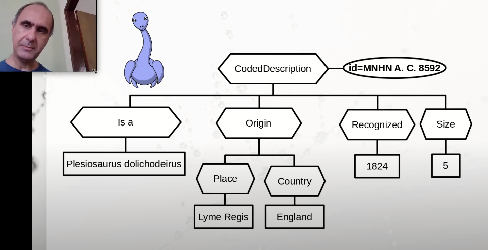
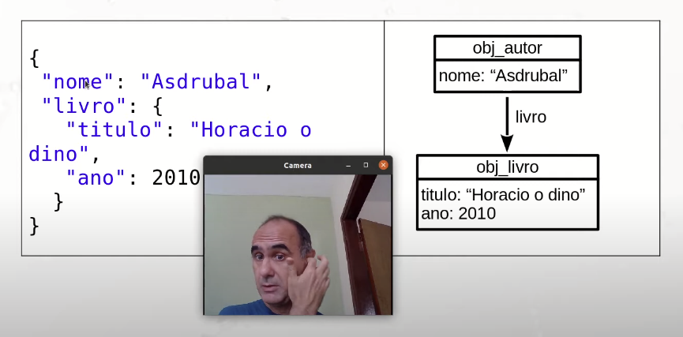

Disciplinas
-
BANCO DE DADOS-T01-2024-1 Concluído
Materiais
Vídeo 1 - Abordagens NoSQL / Modelos Lógicos e Físicos - Aula 09/12 - Bancos de Dados 2020.2. sendProfessor ministrante: André Santanchè.
Conteúdo
Big Data e NoSQL.
Impacto no Modelo Lógico e Físico.
Bancos de Dados de Documentos e XML.
JSON
Estruturado x Semi-estruturado.
- Estruturado.
- formato estrito.
- e.g., modelo relacional.
- cada registro segue o mesmo formato.
(Elmasri, 2010).
- itens de dados podem ter estruturas variadas.
- grupos de itens compartilham estruturas.
Document Databases
- XML-based.
- BaseX (http://basex.org).
- JSON.
- CouchDB (http://couchdb.apache.org).
- Mongo DB (http://www.mongodb.org).
Modelo Hierárquico (Documentos/XML).
Modelo Hierárquico (JSON + OO).
 JSON.JavaScript Object Notation.
- Padrão aberto de intercâmbio de objetos.
- Baseado na notação JavaScript.
- Incorporado ao ECMAScript (Ecma, 2011).
- Adotado por diversas linguagens.
- ( http://json.org/).
db.autores.find();
db.autores.find({"nome": "Doriana"});
db.autores.find({"livro.titulo": "Horacio o dino"});
Update:
db.autores.update(
{ "nome" : "Doriana" },
{ $set: { "livro.ano": 2015 } }
);
Armazenamento Chave-valor.
- Associa um valor arbitrário a uma chave.
- Chave única em todo o repositório.
- Recupera valor a partir da chave.
Gravando o campo HTML:
Nome: (input type="text" id="nome">(/input>
Funções de leitura/gravação:
function ler() {
var nomeLido = localStorage.getItem("nome_db");
if (nomeLido != null)
document.querySelector("#nome").value = nomeLido;
}
function gravar() {
var nomeGravar = document.querySelector("#nome").value;
localStorage.setItem("nome_db", nomeGravar);
}
Exemplo de Comandos em Redis.
SET dino "O dinossauro"
=> OK
GET dino
=> "0 dinossauro"
APPEND dino," pulou na lama"
=>...
GET school
=> "0 dinossauro pulou na lama"